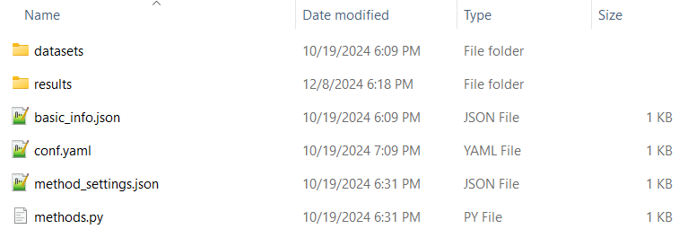
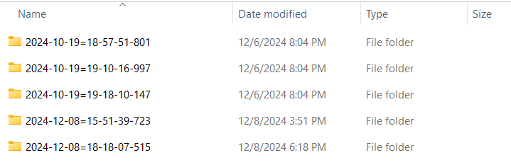
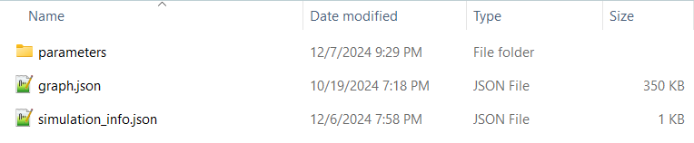

Step 4: Run Simulation
Library
Project class provides 2 methods to execute a simulation within Python code:
lib_run_simulation: This function runs the simulation only 1 time
lib_run_multiple_simulations: This function allows batch running and model exploration.
batch run: Running the simulation with the same settings multiple times, determined by the modeler. This helps reducing the impact of stochasticity on the results.
model exploration: Running the simulation with different settings to observe the impact of independent variables on dependent variables. In Crowd, model exploration constructs a grid of parameter combinations and only one value differs in each combination. It is not possible to explore different node type initializations as it would require the change of other types of nodes for the total to be 100 nodes again.
In this introductory example, we use the first method, lib_run_simulation. We run the simulation for 50 iterations (epochs), save the graph and data collectors every 5 iterations (snapshot period), for one time (curr batch number).
my_project.lib_run_simulation(epochs=50,
snapshot_period=5,
curr_batch=1,
after_iteration_methods=[get_percentage_infected])
Running multiple simulations:
Using the method lib_run_multiple_simulations, by setting num_simulations as 10, we can run the simulation with the same settings 10 times.
my_project.lib_run_simulation(num_simulations=10,
epochs=50,
snapshot_period=5,
after_iteration_methods=[get_percentage_infected])
If model exploration section exists in the configuration file, the simulation will be ran (num_simulations * num_of_possible_settings) times. Each setting will be saved in a different parent simulation directory, while the simulations with the same settings will be saved in the same parent simulation directory.
Later, these results can be aggregated by the merge methods provided by Crowd, as explained in a following section.
App
After selecting the configuration using selectors and saving these settings, simulation can be run by clicking the provided button as explained in step 2.
Running simulations from the app will call run_simulation and run_multiple_simulations methods of Project class.
Where can I find the simulation files on my computer?
Following the completion of a simulation execution, network and other result files (including node type counts and custom method results) will be saved at the results directory of the current project.
Reminder: All projects are saved in the crowd_projects folder under the user directory.
An example directory path in Windows:
'C:\Users\user_name\crowd_projects'
After clicking on the current project, we can see the following files and folders created by default:
{kind=link}
The data files uploaded from the app are all saved in the datasets directory. The simulation results are saved in results. In the following image, we take a look at the results folder of our simplediffusion project.
{kind=link}
These folders are mentioned as parent simulation directories in Crowd documentation, named with their creation time.
As seen on the following image, each parent simulation directory holds its configuration file, while the configuration file on the project directory holds the most recent settings.
In this parent simulation directory, only 1 sub-simulation directory exists, as we have set the number of simulations to 1. When multiple simulations are executed with the same settings, they will all be listed under the same parent simulation directory.

Inside a sub-simulation folder, we have simulation_info and graph files. The graph file holds the graph information saved in each iteration.
Parameters folder holds the results of user defined methods, as well as the node type counts.
{kind=link}
In the following image, we can see the results of our after iteration method, “get_percentage_infected” is saved in a JSON file with the name of the function. after_simulation file is empty as we did not pass any after simulation methods.

count_node_types contains the number of nodes for each node type defined, while status_delta keeps track of the changes in these numbers.
Example:
{
"Iteration": 5,
"Susceptible": -2,
"Infected": -8,
"Recovered": 10
}
This data shows that in iteration 5, the number of Susceptible and Infected nodes have decreased by 2 and 8 respectively, while Recovered nodes have increased by 10.
Next: Step 5: Inspect results with network visualization